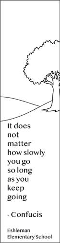

Alejandro Apolaya's Website Portfolio for
|
||||
| Home Print Video Photography | ||||
|

Bookmark made at Millersville University |
For this Print Project, we were tasked to design a bookmark for elementary school kids at Eshleman Elementary School. I was aiming to stand out to a more niche audience of kids, and to an extent, myself. I often struggle with feeling inadequate, and maybe my bookmark can help at least a tenth of a kid to think they are capable of great things. |
|||
|
© 2025 Alejandro Apolaya | ||||